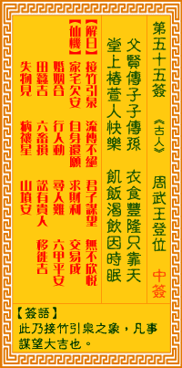

观音灵签第五十五签 【周武王登位】 |
 | |||
父贤傅子子傅孙 衣禄丰盈富在天 金马玉堂人快乐 饥时吃饭困时眠 |
||||
| 【吉凶】 | 大吉签 | 【宫位】 | 丑宫 | |
| 【签语】 | 此卦接竹引泉之象，凡事谋望大吉也。 | |||
| 【解曰】 | 接竹引泉 流传不绝 君子谋望 无不欣悦 | |||
| 【仙机】 | 此签家宅欠安，自身还愿，求财利，交易成，婚姻合，行人动，寻人难，六甲平安，田蚕吉，六畜损，讼有贵人，移徙吉，失物见，病禳 星，山坟安。 | |||
| 【详解】 | 世代传承子孙优秀贤能，衣食无缺富贵在天;金玉满堂无忧无虑自然舒爽，饿了就吃，倦了就眠的生活必然适意。 祖宗积德，福禄后昆，荣禄并耀，光裕门庭。此签接竹引泉之象，凡事着谋吉利。 本签示于弟子曰。子孙贤。衣禄丰盈富在天。君尔之命。即是富贵天定者。大吉大利之签者。功名。交易。婚姻。求财皆如意者。而且吃饭困时眠之运。逢此大吉利之时。宜多修德。积善。更可发扬光大者。 此签有”失控惹祸”之意。提醒当事人，遇事不宜意气用事。有时人与人之间难免意见不合而发生争执口角。须知冲动于事无补，无论对方是否有错在先，但如果因此而忍不下一口气、非要争个理出来，却可能导致撕破脸不相往来、见面又尴尬的局面，甚至拖累到不相干的人替你收拾残局。这都是因为欠缺理智且没有顾虑到后果所造成的影响。俗云：”冤家宜解不宜结”。与其吵得面红耳赤闹得不可开交，还不如冷静下来，想个好方法，既不会伤害到对方，又可以避免让事情重蹈覆辙。心平气和解决问题，而非制造问题。 | |||
| 【典故】 | 周武王（文王之子）在尚父姜子牙辅助下，击败了可恶的纣王，纣王在摘星楼上焚火自杀，结束商朝统治。子牙（太公）于是建设楼台， 拜祭天地，周武王正式登王位，是为周朝元年壬辰。次日又设鹿台，将钱财分散给人民，以资庆祝。周朝在历史上有八百年的统治。 | |||